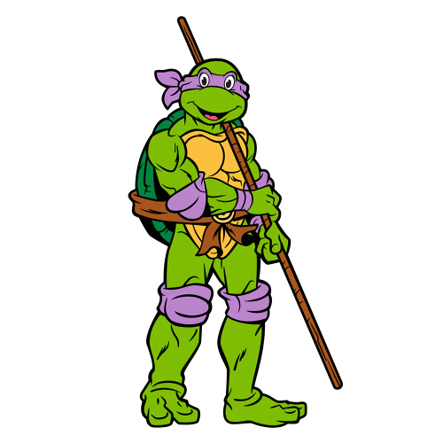

Purple Turtle - Donatello
Donatello, nicknamed Don or Donnie/Donny, is usually depicted wearing a purple eye mask.
He is the smartest and often gentlest of his brothers. his signature weapon is the bō staff. he is the tallest ninja turtle, his ninja skills are the lowest of the four turtles.